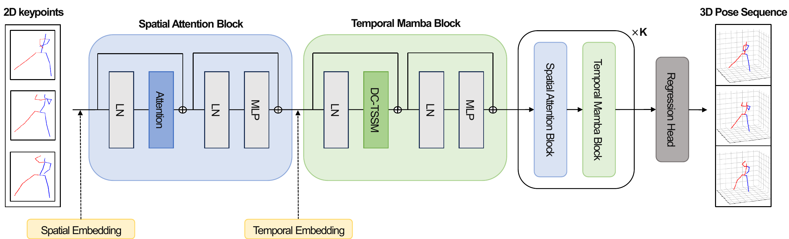
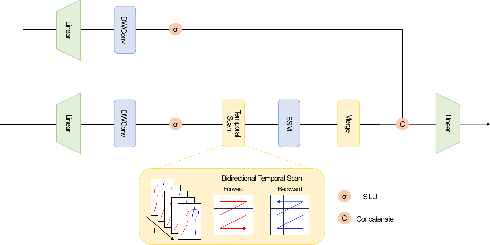
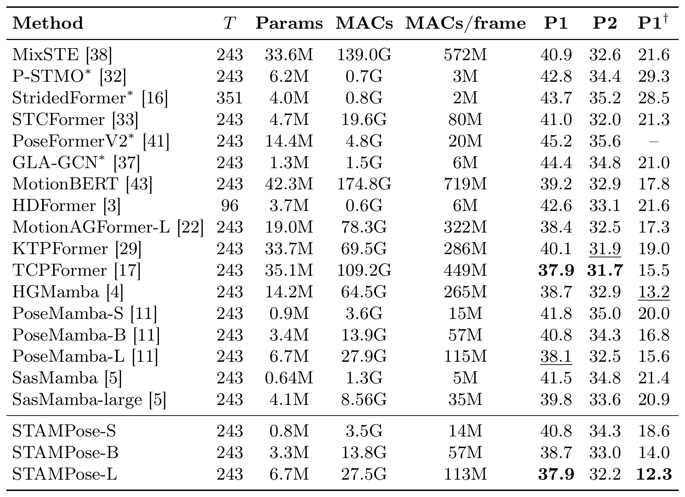
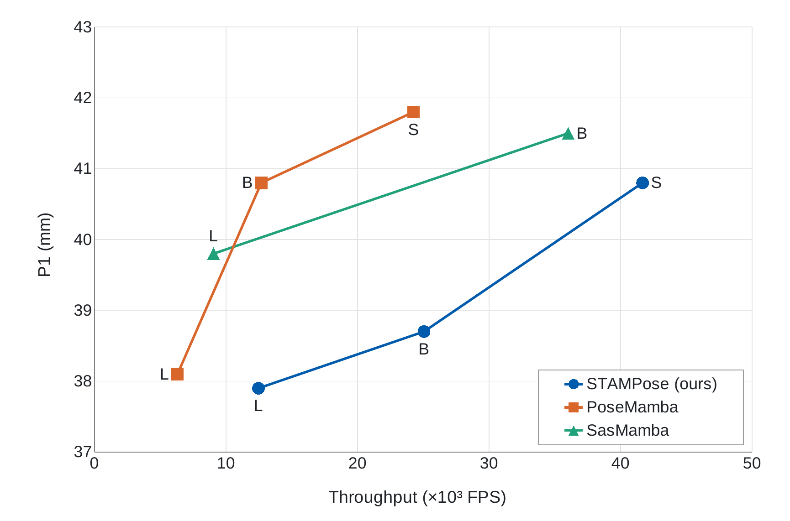
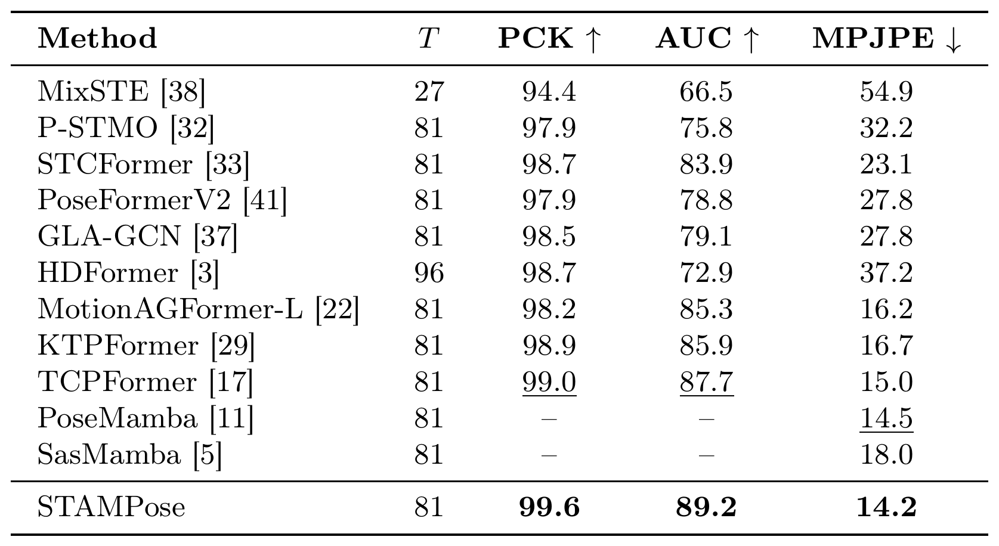
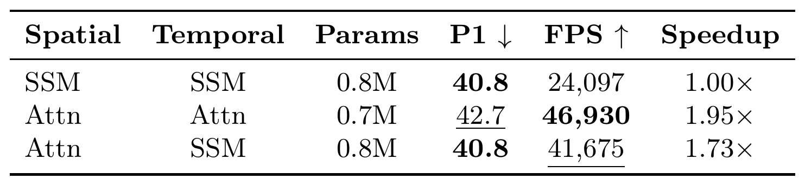
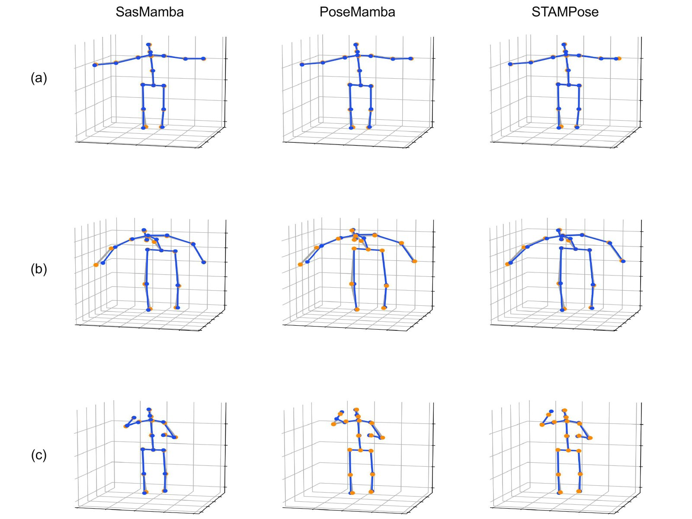
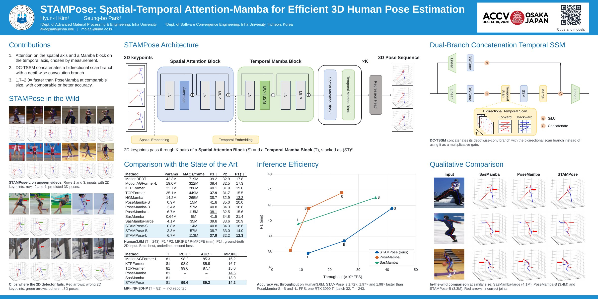

For monocular 2D-to-3D human pose lifting, recent purely Mamba-based methods exploit the linear complexity of state space models (SSMs) by applying them to both the spatial and temporal axes. At standard benchmark lengths (J=17 joints, T=243 frames), however, asymptotic complexity offers limited guidance for choosing each operator. The proposed STAMPose pairs spatial attention with a Dual-Branch Concatenation Temporal SSM (DC-TSSM) block, which fuses a bidirectional selective scan and a depthwise-convolution branch by channel concatenation. We select each operator from measured results: on the spatial axis, attention matches the accuracy of an SSM at 1.73× higher throughput, whereas on the temporal axis, DC-TSSM is more accurate than attention, which runs faster. On Human3.6M and MPI-INF-3DHP, STAMPose matches or surpasses prior SSM models while achieving 1.7–2.0× higher throughput than PoseMamba at comparable parameter counts.

Overall architecture of the proposed STAMPose framework, with alternating Spatial Attention Blocks and Temporal Mamba Blocks between the input embedding and the regression head.
STAMPose takes as input a 2D keypoint sequence x ∈ ℝT×J×2 representing J joints over T frames, and outputs a 3D keypoint sequence y ∈ ℝT×J×3. After projecting the input into a high-dimensional feature space through an initial embedding layer, we add spatial and temporal positional embeddings that encode per-joint and per-frame information. The features then pass through K pairs of a Spatial Attention Block (S) and a Temporal Mamba Block (𝒯), stacked in alternation as (S𝒯)K for 2K blocks in total. Both block types use the same residual structure of LayerNorm–token mixer–LayerNorm–MLP, where the token mixer is attention for S and DC-TSSM for 𝒯.

Structure of the DC-TSSM block: a bidirectional-scan main branch and a depthwise-convolution auxiliary branch fused by channel concatenation.
DC-TSSM is reconfigured for the temporal modeling of 3D HPE, drawing inspiration from the MambaVision mixer. DC-TSSM delegates spatial topology modeling to the preceding Spatial Attention Block and extracts temporal dependencies through a bidirectional selective scan by restricting the scan target to the temporal axis (T). After an initial linear projection, the input tensor is split along the channel dimension into a main and an auxiliary branch. Unlike the standard Mamba block, whose auxiliary branch acts as an element-wise multiplicative gate, DC-TSSM places an independent 1D depthwise convolution in the auxiliary branch and combines the two branches by channel concatenation, so that the long-range features of the scan branch and the local temporal features of the convolution branch enter the output projection as separate channels.

Quantitative comparisons on the Human3.6M dataset. T denotes the number of input frames, and * marks methods that estimate only the center frame. P1 and P2 denote MPJPE and P-MPJPE (mm), respectively, and P1† denotes P1 with 2D ground-truth keypoints as input.

Accuracy vs. throughput on Human3.6M. STAMPose is 1.72×, 1.97× and 1.98× faster than PoseMamba-S, -B and -L. FPS: one RTX 3090 Ti, batch 32, T = 243.

Quantitative comparisons on MPI-INF-3DHP. Prior results are taken from their original papers. ‘–’ indicates that PCK/AUC were not reported by PoseMamba and SasMamba.

Starting from the proposed configuration (Spatial Attention + DC-TSSM), we swap one operator at a time. The temporal SSM denotes the proposed DC-TSSM block, and the spatial SSM adopts the spatial SSM block of PoseMamba with its original scan strategy.
Replacing the spatial operator with an SSM leaves P1 unchanged at 40.8 mm while lowering the throughput by a factor of 1.73, so at J=17 we select the spatial operator by throughput. By contrast, replacing the temporal operator with attention yields the highest throughput (46,930 FPS) but worsens P1 to 42.7 mm, higher than even PoseMamba-S (41.8 mm), so at T=243 we select the temporal operator by accuracy.
For a parameter-controlled qualitative comparison, we compare STAMPose-B (3.3M) with PoseMamba-B (3.4M) and SasMamba-large (4.1M), which have comparable parameter scales.
Qualitative comparison with SasMamba-large and PoseMamba-B on challenging in-the-wild videos.

Qualitative comparison with SasMamba-large and PoseMamba-B on Human3.6M. The gray skeleton is the ground-truth 3D pose. The blue skeleton is the estimated 3D pose.

@inproceedings{kim2026stampose,
title = {STAMPose: Spatial-Temporal Attention-Mamba for Efficient 3D Human Pose Estimation},
author = {Kim, Hyun-il and Park, Seung-bo},
booktitle = {Proceedings of the Asian Conference on Computer Vision (ACCV)},
year = {2026}
}